Strip menu in Sequencer window
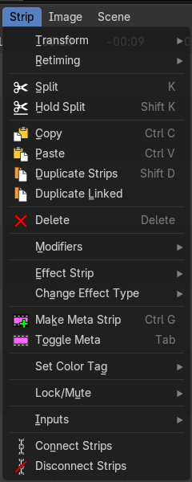
The strip menu contains strip related functionality. The content differs, dependent of the selected strip.
Transform - Submenu
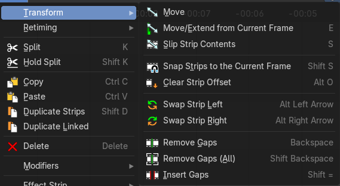
This sub-menu contains transform operators that you can use on strips.
Move
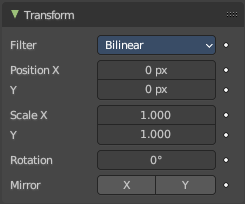
Moves the selected strip(s).
| Entry | What it does |
|---|---|
| Move/Extend from Current Frame | Extends the selected strips relative to the frame indicator and the mouse position. All selected strip handles to the mouse side of the current frame indicator will transform together. |
| Slip Strip Contents | Change the position of the contents of a strip without moving the strip itself. |
| Snap Strips to the Current Frame | Snaps the selected strips to the current frame. |
| Clear Strip Offset | Clear strip offset from the start and end frames. |
| Swap Strip Left | Swap the active strip with the strip to the left. |
| Swap Strip Right | Swap the active strip with the strip to the right. |
Remove Gaps
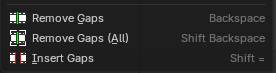
Removes gaps at the frame indicator position in the current channel. Strips after the indicator will move to the left to close the gap.
| Entry | What it does |
|---|---|
| Remove Gaps (All) | Remove all gaps between all clips at the right side. |
| Insert Gaps | Inserts a gap at the frame indicator position. Strips after the indicator will move to the right by the amount of gap frames. |
Retiming - Submenu
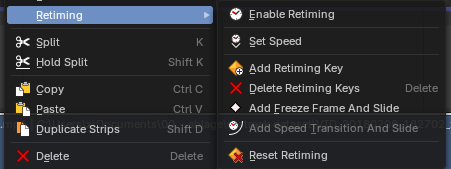
This submenu contains retiming operators to help change the speed of movie strips. This menu is context sensitive. If you select a retiming keyframe, you will see a new set of operators.
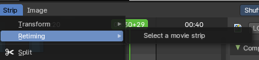
Note: These operators only work on movie strips, and you must have one selected to see the operators.
Enable/Disable Retiming
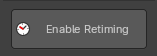
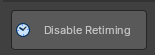
Enables and Disables the retiming keys of a strip. When you enable retiming, you will be able to set keyframes to retime at difference speeds, to set freeze frames, and or set gradient time changes between keyframes.
Set Speed
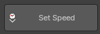
Sets the speed of a retimed segment. If there is no segment, it will create a new segment. To edit the segment, Enable Retiming.
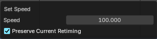
Note: The speed is a percentage of total, where 100% is original speed, 110% of the movie playback is 10% faster, and at 90% the movie playback is 10% slower.
| Entry | What it does |
|---|---|
| Speed | The new speed value. |
| Preserve Current Retiming | With preserve current retiming the strip changes length instead of changing next segment speed. |
Add Retiming Key
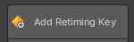
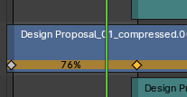
Adds a retiming key. Here you can change strip speeds in various locations within the strip to squash and stretch time dynamically. To edit a retiming key, click on it in the bottom row of the movie strip and drag left or right. A percentage overlay will show the amount of time change is happening between the keyframes.
Delete Retiming Key
Removes the selected retiming keys.
Add Freezeframe
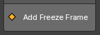
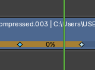
Adds a freeze frame by creating two retiming keyframes with 0% time change between them. You can then later adjust the length of the freezeframe by adjusting either of the retiming keyframes.
Add Speed Transition And Slide
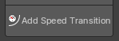
Add a smooth time transition between two retimed segments.
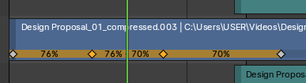
To do this, create 3 retiming keyframes, select the middle one, then use the operator. This will create two new keyframes with a begging percentage and an ending percentage. The distance between these two retiming keyframes will be the duration of the transition.
Note: This operator only shows when you have a retiming keyframe selected.
Reset Timing
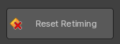
Resets the movie strip to original playback speed.
| Entry | What it does |
|---|---|
| Split | Split the selected strip into two parts at the current frame. |
| Hold Split | Like Split, it splits a strip in two strips. But you will not be able to drag the endpoints to show the frames past the split of each resulting strip. You can adjust the Hold Offset number fields in the Strip Info panel. |
| Copy | Copies the selected strip(s). |
| Paste | Pastes copied strip(s). |
| Duplicate Strips | Duplicates the selected strip(s). |
| Duplicate Linked | This creates a linked duplicate of the selected strip(s), meaning the new strip shares the same underlying data as the original. |
| Delete | Deletes the selected strip(s). |
Delete Strip & Data
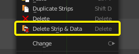
Deletes the selected scene strip types and associated scene data.
This will then convert the associated scene to an orphan data block which will be permanently removed upon save and re-load of the *.blend file.
Modifiers – Submenu
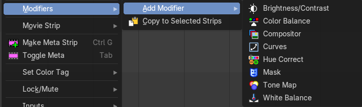
All strip types. Adds a strip modifier. Strip modifiers are explained in the sidebar chapters.
Sound strips has different content in the modifier menu.
Copy modifiers to selection
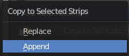
Copies the modifiers from the source strip to the target strip by given method. It opens a popup where you can choose the method.
First select the source strip. Hold down shift, select the second strip. Perform the tool.
Effect Strip
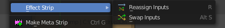
Strip type Effects.
| Entry | What it does |
|---|---|
| Reassign Inputs | Reassigns the input of the strips. Unfortunately not to find out how this works. |
| Swap Inputs | Swaps the inputs of the selected strips. Unfortunately not to find out how this works. |
Change Effect Types
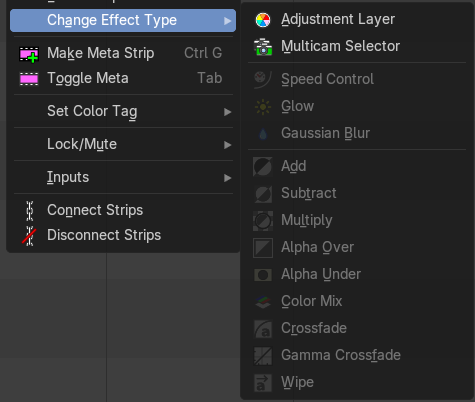
Changes a selected existing effect strip effect type. Only shows when an effect strip is selected.
These operators show and hide depending on the strip selection context.
If a strip cannot be changed, it will advise you to selected a changeable strip, which are Scene, Effect and Data strips.
Movie Strip - Submenu
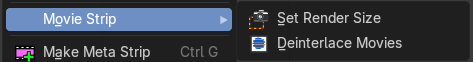
Strip type Movie.
| Entry | What it does |
|---|---|
| Set Render Size | Set the render size and aspect from the active strip. Attention, there is no feedback if the operation was successful. It simply sets it. |
| Deinterlace Movies | Deinterlaces the selected movie strips. |
Set Render Size
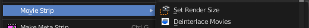
Strip type Image.
Set the render size and aspect from the active image strip. Attention, there is no feedback if the operation was successful. It simply sets it.
Interlace Movies
Strip type Image. Create a strip for every image in the image sequence strip.
Last Operator Separate Images
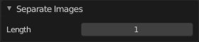
The length of each frame of the new created strips.
Make Meta Strip

Creates a meta strip out of the selected strips. A Meta Strip is a strip which contain multiple strips treated as if it was one strip. It allows you to reduce the vertical space used in the Sequencer. You can edit it the same way as any other strips.
Note: The default blend mode for a Meta strip is Replace. There are many cases where this alters the results of the animation so be sure to check the results and adjust the blend mode if necessary.
| Entry | What it does |
|---|---|
| UnMeta Strip | Separating (ungrouping) the Meta strip restores the strips to their relative positions and channels. |
| Toggle Meta | Toggles between the meta and unmeta state. You need to have a meta strip in the sequencer timeline already. |
Set Color Tag
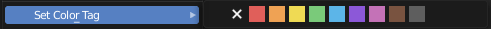
Set the display color of the strips.
Lock/Mute - Submenu
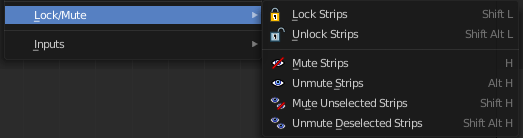
Lock Strips
Locks the strip from editing. They can't be moved or edited anymore.

Locked strips appears hatched.
Unlock Strips
Unlock locked strips.
Mute Strips

Mutes the selected strips. They do not play anymore, and they appear greyed out.
| Entry | What it does |
|---|---|
| Unmute Strips | Unmutes selected muted strip. |
| Mute unselected strips | Mute the unselected strips. |
| Unmute deselected Strips | Unmute all deselected strips. |
Inputs - Submenu
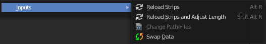
| Entry | What it does |
|---|---|
| Reload Strips | Reloads the strips in the sequencer. |
| Reload Strips and Adjust Length | Reloads the strips in the sequencer. |
| Change Paths/Files | Undocumented Operator. Opens a file selector. |
| Swap Data | Swaps the data between two selected strips. The strips must be compatible. |
Connect Strips
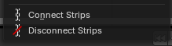
Link selected strips together for simplified group selection. When strips are connected, they will show a connected link icon to the top left of the strips.
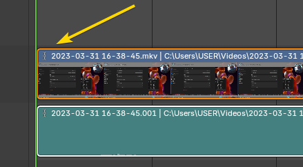
When connected and you move one, you will move all connected strips.
Note: To use, select multiple strips then connect.
Disconnect Strips
Unlink selected strips so that they can be selected individually,
Note: To use, select multiple strips then disconnect.
Strip menu in Preview window
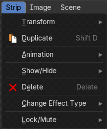
The strip menu contains strip related functionality.
Transform - Submenu
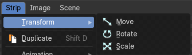
| Entry | What it does |
|---|---|
| Move | Move the selected item. |
| Rotate | Rotate the selected item. |
| Scale | Scale the selected item. |
Duplicate
Duplicates the selected item.
Animation
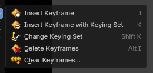
| Entry | What it does |
|---|---|
| Insert Keyframe | Insert keyframes on the current frame. It inserts the keyframes in the active keying set. In case there is no keying set defined, it uses the default keying set defined in the User Preferences. |
| Insert Keyframe with Keying Set | Insert Keyframe for specified keying set. |
| Change Keying Set | Set a new active keying set. |
| Delete Keyframes | Removes keyframes from the selected strip the current frame. |
| Clear Keyframes | Removes all keyframes for the selected strip across the entire timeline. |
Show / Hide sub menu
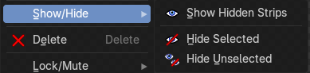
| Entry | What it does |
|---|---|
| Show hidden strips | Reveals hidden strips. |
| Hide selected | Hides selected strips. |
| Hide Unselected | Hides unselected strips. |
Delete
Deletes the selected strips.
Lock/Mute - Submenu
Lock Strips
Locks the strip from editing. They can't be moved or edited anymore.
Locked strips appears hatched.
Unlock Strips
Unlock locked strips.
Mute Strips
Mutes the selected strips. They do not play anymore, and they appear greyed out.
| Entry | What it does |
|---|---|
| Unmute Strips | Unmutes selected muted strip. |
| Mute unselected strips | Mute the unselected strips. |
| Unmute deselected Strips | Unmute all deselected strips. |